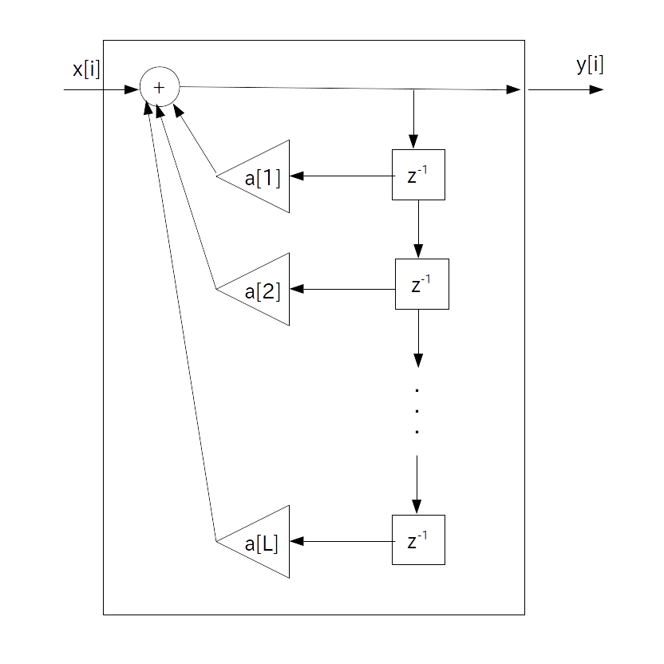
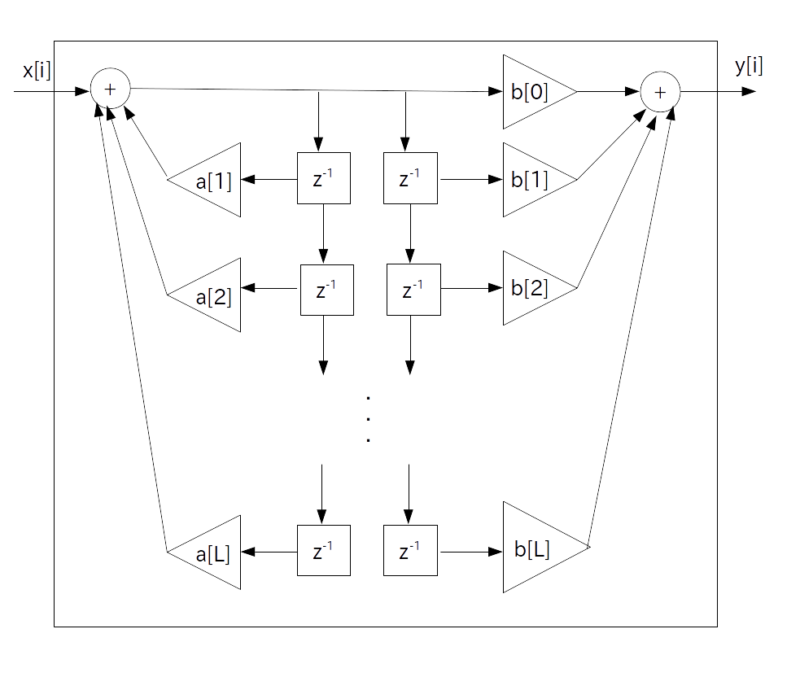
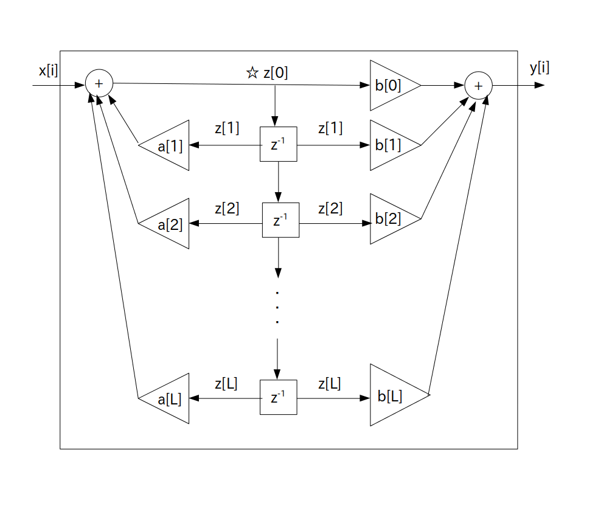

IIR (Infinite Impulse Response) フィルタはインパルス応答が無限に出続ける線形時不変ディジタルフィルタで、日本語では「無限インパルス応答フィルタ」と呼ばれています。
インパルス応答が無限に出続けますので、FIR フィルタのように簡単にプログラミングすることは出来ません(畳み込み演算が無限のforループになります)。
そこで IIR フィルタの場合はフィードバック機構を使って設計をします。
IIR フィルタには色々な種類があるのですが、今回は話を簡単にするために、次に示す標準形 L 次 IIR フィルタだけを考えます。
正整数 $\textrm{L}$ を有限の数、$a[i]$ 、$b[i]$を実定数とした時、標準形 IIR フィルタの伝達関数は以下で表される。
\begin{align*} \textrm{H}(z) & = \frac{ \sum_{i=0}^{\textrm{L}} \{ b[i] \cdot z^{-i} \}}{ 1 - \sum_{i=1}^{\textrm{L}} \{ a[i] \cdot z^{-i} \} } \\ & = \frac{ b[0] + b[1] \cdot z^{-1} + b[2] \cdot z^{-2} + \cdots + b[\textrm{L}] \cdot z^{-\textrm{L}} } { 1 - \{ a[1] \cdot z^{-1} + a[2] \cdot z^{-2} + \cdots + a[\textrm{L}] \cdot z^{-\textrm{L}} \} } \end{align*}・実定数 $a[i]$ 、$b[i]$ をIIRフィルタ係数と呼ぶ
・整数 $\textrm{L}$ を「フィルタ次数」と呼ぶ
なお、FIRフィルタは常に安定なフィルタでしたので適当に設計しても問題ありませんでしたが、IIRフィルタの場合は極が必ずZ平面上の単位円内にあるとは限りませんので、
「IIRフィルタは設計次第で安定になる場合もあるし、不安定になる場合もある」
と言えます。
さて、この伝達関数は前段のフィードバック機構 \begin{align*} \frac{ 1}{ 1 - \sum_{i=1}^{\textrm{L}} \{ a[i] \cdot z^{-i} \} } \\ \end{align*}
と後段の FIR フィルタ
\begin{align*} \sum_{i=0}^{\textrm{L}} \{ b[i] \cdot z^{-i} \} \end{align*}が直列結合している形となっています。
前段のフィードバック機構はFIR フィルタがフィードバック機構の $\textrm{H}_1(z)$ になっている形てすので次のブロック図で表されます。

従って後段の FIR フィルタと直列結合した時のブロック図は次のようになります。

ただこのままでは中央の遅延器が重複してもったいないので１つにまとめます。
すると最終的に標準形 L 次 IIR フィルタのブロック図は以下のように表されます。
なお図中にある☆マークは下のプログラム表現の項目で使います。

プログラム表現は以下の通りです。
z[n] を n 時刻前の☆の位置における値とする。
// 前段フィードバック部 z[0] = x[i]; for( int n = 1; n <= L; ++n ) z[0] += a[n] * z[n]; // 後段フィードフォワード部 y[i] = 0; for( int n = 0; n <= L; ++n ) y[i] += b[n] * z[n]; // バッファシフト for( int n = 1; n <= L; ++n ) z[n] = z[n-1];